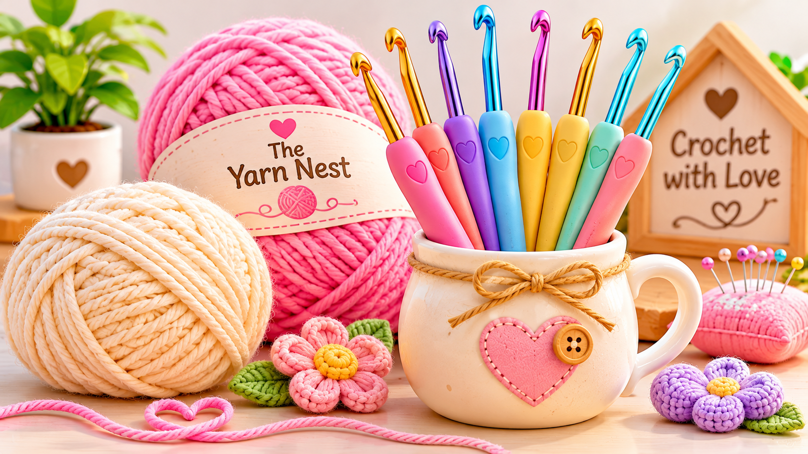
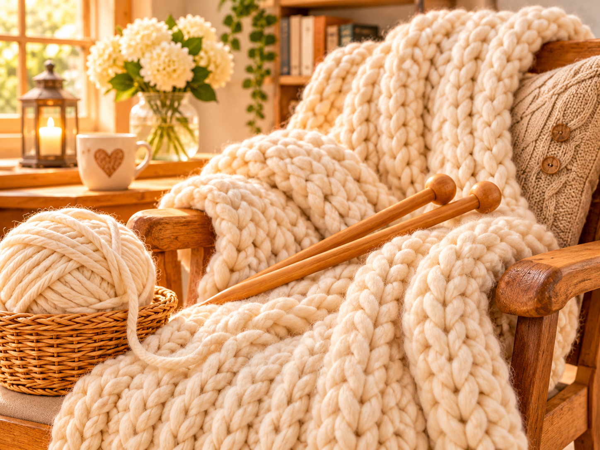

Buying Guide
October 24, 2024
Best Yarn for Beginners: Top 3 Choices
Confused about which yarn to buy for your first project? Read our complete breakdown.
Read Article →Browse all our crochet and knitting guides.

Buying GuideConfused about which yarn to buy for your first project? Read our complete breakdown.
Read Article → Tutorial
Tutorial
Learn the pencil grip and knife grip methods to make your hands less tired.
Read Article →
PatternCreate a cozy, chunky blanket in just one weekend with this pattern.
Read Article →
Buying Guide
Struggling with hand pain? Discover the best ergonomic hooks that reduce fatigue.
Read Article → Tutorial
Tutorial
Learn how to read a crochet pattern step-by-step. Understand abbreviations and symbols easily.
Read Article → Christmas Crochet
Christmas Crochet
Discover 5 easy crochet Christmas ornament ideas for beginners, including handmade Christmas trees, stars, snowflakes, bells, and candy canes. Create beautiful DIY Christmas decorations with simple crochet techniques.
Read Article → Amigurumi
Amigurumi
Explore modern crochet plush trends, yarn choices, stitching techniques and finishing tips.
Read Article → Crochet Ideas
Crochet IdeasChic Stitches: Modern Amigurumi Ideas to Elevate Your Crochet Amigurumi—the Japanese art of crocheting small, stuffed yarn creatures—has exploded in...
Read Article Image: Pixabay